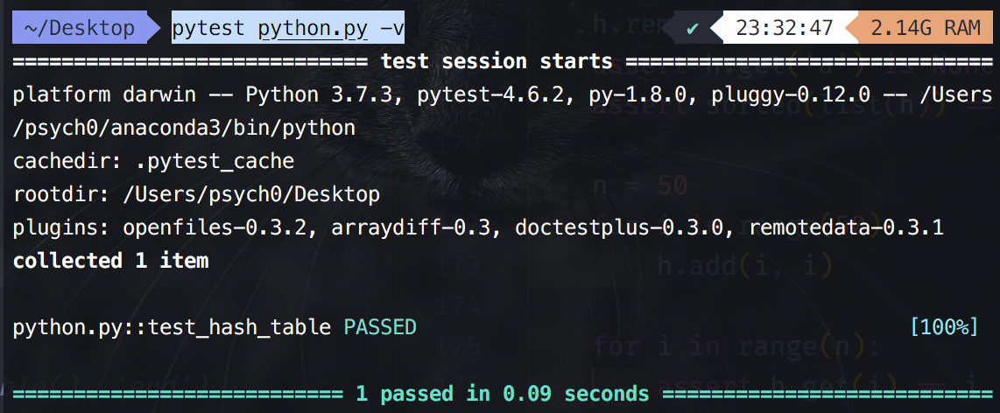

哈希表的工作过程：
哈希表是通过一个哈希函数来计算一个元素应该放在数组哪个位置，当然对于一个 特定的元素，哈希函数每次计算的下标必须要一样才可以，而且范围不能超过给定的数组长度。
哈希冲突 (collision)：
不同的 key 通过我们的哈希函数计算后得到的下标一样， 这种情况成为哈希冲突。
解决哈希冲突的办法：
链接法：让遇到冲突的槽变成一个链式结构；
开放寻址法(open addressing)：思想是当一个槽被占用的时候，采用一种方式来寻找下一个可用的槽。（这里槽指的是数组中的一个位置），根据找下一个槽的方式不同，分为：
我们选一个简单的二次探查函数 ，它的意思是如果遇到了冲突，我们就在原始计算的位置不断加上 i 的平方。我写了段代码来模拟整个计算下标的过程：
inserted_index_set = set() M = 13 def h(key, M=13): return key % M to_insert = [765, 431, 96, 142, 579, 226, 903, 388] for number in to_insert: index = h(number) first_index = index i = 1 while index in inserted_index_set: # 如果计算发现已经占用，继续计算得到下一个可用槽的位置 print('\th({number}) = {number} % M = {index} collision'.format(number=number, index=index)) index = (first_index + i*i) % M # 根据二次方探查的公式重新计算下一个需要插入的位置 i += 1 else: print('h({number}) = {number} % M = {index}'.format(number=number, index=index)) inserted_index_set.add(index)
这段代码输出的结果如下：
h(765) = 765 % M = 11
h(431) = 431 % M = 2
h(96) = 96 % M = 5
h(142) = 142 % M = 12
h(579) = 579 % M = 7
h(226) = 226 % M = 5 collision
h(226) = 226 % M = 6
h(903) = 903 % M = 6 collision
h(903) = 903 % M = 7 collision
h(903) = 903 % M = 10
h(388) = 388 % M = 11 collision
h(388) = 388 % M = 12 collision
h(388) = 388 % M = 2 collision
h(388) = 388 % M = 7 collision
h(388) = 388 % M = 1
装载因子(load factor):
如果继续往我们的哈希表里塞东西会发生什么？空间不够用。这里我们定义一个负载因子的概念(load factor)，其实很简单，就是已经使用的槽数比哈希表大小。
比如我们上边的例子插入了 8 个元素，哈希表总大小是 13， 它的 load factor 就是 。当我们继续往哈希表插入数据的时候，很快就不够用了。
通常当负载因子开始超过 0.8 的时候，就要新开辟空间并且重新进行散列了。
哈希表的代码实现：
# 这部分直接复制之前 Array 的实现代码（略作修改） class Array(object): def __init__(self, size = 32, init=None): self._size = size self._items = [init] * size # 注意 [None] 是一个 list def __getitem__(self, index): return self._items[index] def __setitem__(self, index, value): self._items[index] = value def __len__(self): return self._size def clear(self, value=None): for i in range(len(self._items)): self._items[i] = value def __iter__(self): for item in self._items: yield item class Slot(object): """定义一个 hash 表数组的槽(slot 这里指的就是数组的一个位置) hash table 就是一个数组，每个数组的元素（也叫slot槽）是一个对象，对象包含两个属性 key 和 value。 注意，一个槽有三种状态。相比链接法解决冲突，探查法删除一个 key 的操作稍微复杂。 1.从未使用 HashMap.UNUSED。此槽没有被使用和冲突过，查找时只要找到 UNUSED 就不用再继续探查了 2.使用过但是 remove 了，此时是 HashMap.EMPTY，该探查点后边的元素仍然可能是有key的，需要继续查找 3.槽正在使用 Slot 节点 """ def __init__(self, key, value): self.key, self.value = key, value class HashTable(object): UNUSED = None # 没被使用过 EMPTY = Slot(None, None) # 使用却被删除过 def __init__(self): self._table = Array(8, init=HashTable.UNUSED) self.length = 0 @property def _load_factor(self): # 获得装载因子load_factor；超过 0.8 重新分配 return self.length / float(len(self._table)) def __len__(self): return self.length def _hash(self, key): # 哈希函数 return abs(hash(key) % len(self._table)) # 根据输入的 key 查找对应的 index（是对已经存储“建立”好的“表”） def _find_key(self, key): """ 解释一个 slot 为 UNUSED 和 EMPTY 的区别：因为使用的是二次探查的方式，假如有两个元素 A，B 冲突了，首先 A hash 得到是 slot 下标 5，A 放到了第 5 个槽，之后插入 B 因为冲突了，所以继续根据二次探查方式放到了 slot8。 然后删除 A，槽 5 被置为 EMPTY。然后我去查找 B，第一次 hash 得到的是 槽 5，但是这个时候我还是需要第二次计算 hash 才能找到 B。但是如果槽是 UNUSED 我就不用继续找了，我认为 B 就是不存在的元素。这个就是 UNUSED 和 EMPTY 的区别。 """ origin_index = index = self._hash(key) # # origin_index 用来判断是否又走到了起点，如果查找一圈了都找不到则无此元素 _len = len(self._table) # 看计算出的该 key 对应的槽（index）的状态是不是 UNUSED；开始初始化的时候所有的槽都被初始化为 UNUSED # 如果是 UNUSED，那么说明该 key 对应的槽（index） 是完全没被使用过的；就表明这个 key 是“不存在”的，就没必要继续往下找了返回 None 就可以了（结合上面 “UNUSED 和 EMPTY 的区别”内容进行理解） 对应的槽没被使用过，直接返回即可； # 如果不是 UNUSED，就继续向下寻找 while self._table[index] is not HashTable.UNUSED: # 接下来槽的情况只有两种可能：EMPTY 或 正在被使用 # EMPTY 情况 if self._table[index] is HashTable.EMPTY: # 查看该 index 对应的槽是不是 EMPTY；如果是 EMPTY，那么说明是被其它 key 占用过然后里面的“数据”被删除掉了，所以肯定不是这个 key 对应的槽 index = (index * 5 + 1) % _len # 这是 cpython 使用的一种解决哈希冲突的方法；所以需要继续计算往后寻找 if index == origin_index: # 如果 index 又等于了 origin_index，说明又回到了起点（因为开始就是从 origin_index 开始的，再继续下去也只是一直循环没什么意义了） break # 退出 while 循环 retun None continue # 查看“修正”后的 index 还是不是 UNUSED，然后再次开始循环 # 正在被使用的情况 if self._table[index].key == key: # 如果这个槽中对应的 key 值（每个被使用的槽中都存储了 key 值）和要查找的 key 值相同，则说明找到了这个 key 对应的 index return index # 将找到的 index 返回 else: # 如果既不是 EMPTY，也不是这个 key 对应的槽，那就说明这个槽被占用了但不是这个 key 对应的槽，继续往后寻找 index = (index * 5 + 1) % _len # 没有找到继续找下一个位置 if index == origin_index: break return None # 判断该槽是不是 EMPTY 或 UNUSED，以便判断能不能进行数据插入 def _slot_can_insert(self, index): return (self._table[index] is HashTable.EMPTY or self._table[index] is HashTable.UNUSED) # 根据 key 返回要存储该 key 的槽的 index def _find_slot_for_insert(self, key): index = self._hash(key) _len = len(self._table) while not self._slot_can_insert(index): # 一直遍历，直到找到一个可以用的槽 index = (index * 5 + 1) % _len # 这是 cpython 使用的一种解决哈希冲突的方法 return index def __contains__(self, key): # in operator，实现之后可以使用 in 操作符判断 index = self._find_key(key) return index is not None # 插入一对 key-value；如果已经有了 key，那么就更新 value def add(self, key, value): # 用到了上面的 __contains__ 函数 if key in self: # 如果这个 key 已经在这个“表”中 index = self._find_key(key) # 那就找到这个 key 对应的 index self._table[index].value = value # 然后将 value 值赋值给这个 key 对应的槽，进行值的更新 return False else: # 如果没有 index = self._find_slot_for_insert(key) # 找到这个 key “哈希函数”后得到的 index self._table[index] = Slot(key, value) # 将这个 Slot() 对象存储到这个槽中 self.length += 1 if self._load_factor >= 0.8: # 如果装载因子超过了 0.8，那么就需要重新开辟空间 self._rehash() return True # 开辟新的空间 def _rehash(self): old_table = self._table # 现将原来旧的空间存储起来 newsize = len(self._table) * 2 # 体积扩大为原来的 2 倍（不管是第几次更新） self._table = Array(newsize, HashTable.UNUSED) # 更新新空间 self.length = 0 for slot in old_table: # 将原来旧空间中的数据都“转移”到该新空间 if slot is not HashTable.UNUSED and slot is not HashTable.EMPTY: # 将所有被占用的（即除 UNUSED 和 EMPTY 之外的槽）槽的数据都转移过来 index = self._find_slot_for_insert(slot.key) # 找到每个 key 对应的 index self._table[index] = slot self.length += 1 # 根据 key 得到对应的值 def get(self, key, default=None): index = self._find_key(key) if index is None: return default else: return self._table[index].value def remove(self, key): index = self._find_key(key) if index is None: raise KeyError() value = self._table[index].value self.length -= 1 self._table[index] = HashTable.EMPTY # 移除后将该槽的 Slot() 设置为 EMPTY return value def __iter__(self): for slot in self._table: if slot not in (HashTable.EMPTY, HashTable.UNUSED): yield slot.key def test_hash_table(): h = HashTable() h.add('a', 0) h.add('b', 1) h.add('c', 2) assert len(h) == 3 assert h.get('a') == 0 assert h.get('b') == 1 assert h.get('black') is None h.remove('a') assert h.get('a') is None assert sorted(list(h)) == ['b', 'c'] n = 50 for i in range(50): h.add(i, i) for i in range(n): assert h.get(i) == i # if __name__ == '__main__': # print('begin', test_hash_table(), 'end')
运行 pytest python.py -v 后的结果如下：
